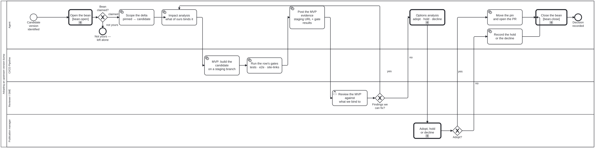

Generated from
cat-harness/processes/sdlc/upstream-version-adoption.bpmnbygen-processes-viz.ts— do not edit here. All processes
Process_UpstreamAdoption · strict · 10 step(s)
A REUSABLE SUBPROCESS, entered once per pinned upstream dependency that has fallen behind a release. Callers invoke it with calledElement="Process_UpstreamAdoption"; upstream-pin-watch.bpmn is the first, and a person may enter it directly with workflow_start when they want to try a version the watcher has not raised.
Reusable means the tenant-specific part is DATA. upstream-pins.json carries, per row, what of ours binds to the dependency and what its MVP runs; this diagram carries the order those are done in, which is the same for every tenant. A second tenant is a registry row, not a second diagram.
Shaped after crdm-requirements.bpmn because the question is the same one: something outside the repository wants to change what we ship, and the answer has to be a judgement somebody made on evidence rather than a merge that happened. The loop back into impact analysis is the MVP loop — findings the agent can fix are fixed on the same branch and re-evidenced, and only what remains reaches the decider.

upstream-version-adoption skill without calling this process: A sub-KG is staged in place, then leaves for its own repository, Watching a pinned upstream dependency — activity-calls-skill-process asks whether each should be a call activity.| lane | role | what it does here |
|---|---|---|
| Agent | authoring-agent |
Owns the whole MVP loop end to end except the two calls it cannot make: SF_UA_8 re-enters this lane’s own A_Impact on a fixable finding rather than escalating, so a defect gets fixed and re-evidenced here before anyone outside the lane sees it, and Call_OptionsAnalysis sits here specifically because framing the options is not deciding among them — that judgement belongs to PM_Decide in a different lane entirely. |
| CI/CD Pipeline | build-pipeline |
Produces evidence, not verdicts: Task_Gates going red does not end the process or loop by itself — “this version breaks us” is a finding the decider needs to see, not a reason for this lane to stop the run — and Task_Mvp exists so that finding is checked against a real deployed build rather than a description of one. |
| Reviewer / SME | reviewer |
Narrower than a general release review: the question is only whether what upstream-pins.json lists as bound still holds against the deployed MVP, not whether the new version is good on its own terms, and a finding here (GW_Findings) sends the run back to the Agent lane’s own impact analysis rather than stopping it. |
| Publication manager | publication-manager |
Holds the one call in this subprocess that policy marks unrelaxable: PM_Decide’s lane admits a person only, because a pin change is not an edit to the corpus but a change to what the published artefact is BUILT FROM — the fact that puts this decision in the publication manager’s lane rather than the editor’s, which owns corpus changes elsewhere in this repository. |
Every one of the 10 step(s) is documented.
| step | lane | skill / sub-process | what it does |
|---|---|---|---|
Scope the delta pinned → candidateA_Scope |
Agent | upstream-version-adoption |
Restricted to the directories that reach our output — for a Jekyll theme _sass, _includes, _layouts, assets. Upstream’s own docs, CI and tests cannot reach us, and counting them makes a harmless release look alarming.The changelog is the claim; git diff --stat pinned..candidate over those paths is the evidence. |
Impact analysis what of ours binds itA_Impact |
Agent | upstream-version-adoption |
The half a changelog cannot supply, because upstream does not know what you reached into. Worked from the row’s binds list in upstream-pins.json.For the theme: site-chrome/assets/js/docs-ui.js MOVES the theme’s own search markup into the action launcher and binds .search, #search-input and .search-label; docs-ui.css overrides .side-bar, .site-header and .main-header; three e2e specs assert the structure the theme emits. An upstream rename of any of those is not a build failure — it is a shipped feature that quietly stops working. |
MVP: build the candidate on a staging branchTask_Mvp |
CI/CD Pipeline | feature-staging |
An MVP is a DEPLOYED BUILD, not a description of one. The pin is moved on a branch and feature-staging.yml publishes it under STAGING/<branch-slug>/, so the reviewer looks at the artefact rather than at a screenshot — the same argument the merge discipline makes about rendered work. |
Run the row’s gates tests · e2e · site-linksTask_Gates |
CI/CD Pipeline | content-test |
The mvp commands declared for this tenant. For the theme: bun test, CI=1 bunx playwright test (a11y, action tiles, sidebar panels, QA panel) and scripts/site-links.ts --site ./_site, which checks the navbar tiles against the BUILT site rather than against the attribute — the distinction that let a 404 ship unnoticed once already.A red gate is EVIDENCE, not an exit. It does not end the process and it does not loop by itself: “this version breaks us” is a finding the decider needs, not a reason to stop before they see it. |
Post the MVP evidence staging URL + gate resultsA_Evidence |
Agent | delivery-summary |
Staging URL, gate results and the impact analysis, on the PR. Enough for the reviewer to answer without opening anything else. |
Review the MVP against what we bind toR_Review |
Reviewer / SME | staging-review |
A narrower question than “is the new version good”: does everything in binds still hold, checked against the deployed page.A userTask, and the lane admits person and agent — a review agent is a legitimate reviewer here, and the separation that matters is the next lane’s: a reviewer cannot accept. |
Options analysis adopt · hold · declineCall_OptionsAnalysis |
Agent | calls Options analysis | On the single edge into PM_Decide, and deliberately not earlier: the MVP build and its gates are HOW the options’ costs are measured, so an analysis before Task_Mvp would weigh alternatives against no evidence. Everything the decider needs exists by the time the reviewer has finished and the fixable findings are fixed.In the Agent lane, because this step produces the analysis and does not make the decision — PM_Decide is a userTask whose lane admits person only, and putting the analysis in the agent’s lane is what keeps that separation legible rather than implied. A subprocess that decided would be a second accepting party.Reached through the loop as well as straight through: SF_UA_8 re-enters at A_Impact, so a run where the reviewer found something fixable arrives here a second time with different evidence. That is a genuine re-analysis and its op="note" appends rather than deduping, which is the behaviour wanted — a second note records that the options were weighed again against changed inputs. |
Adopt, hold or declinePM_Decide |
Publication manager | decision-audit |
A PERSON decides. The lane admits person only, so activity-fulfilment-kind fails the moment somebody makes an agent the accepting party, and relaxable="false" means no package may relax the step.The publication manager rather than the editor because a pin is not a change to the corpus — it is a change to what the published artefact is BUILT FROM, and that role is the one accountable for what is live. Deliberately NOT a DMN-backed gateway. Every computed gateway in this repository reduces to arithmetic over tool output; this one weighs a rendering nobody can score against the cost of staying behind, and a table here would look authoritative without being so. |
Move the pin and open the PRA_ApplyPin |
Agent | prepare-merge |
The pin literal moves in the one file upstream-pins.json declares, and the PR body says what the version range changed in RENDERED output — the evidence, not just the verdict. |
Record the hold or the declineA_RecordOutcome |
Agent | upstream-version-adoption |
A HOLD is a block with an expiry and a revisit trigger: a hold with neither cannot be told from abandoned work, and the next watcher run re-raises the same pin with no memory of why it was left. A DECLINE is a scrapped bean carrying its reasons — what stops the next agent re-entering the same dead end. Either way the decision is written down before the process ends, and the bean is resolved from here: a run that stops at “we looked and said no” is as finished as one that moved the pin. |
Every one of the 2 decision(s) is documented.
| decision | what decides it | branches |
|---|---|---|
Findings we can fix?GW_Findings |
The review of the upstream MVP against what we bind to: are there findings we can fix on our side? yes goes to impact analysis; no goes to the options analysis (adopt, hold or decline). |
yes → Impact analysis what of ours binds it no → Options analysis adopt · hold · decline |
Adopt?GW_Adopt |
The project manager’s decision. yes moves the pin and opens the PR; no records the hold or the decline. |
yes → Move the pin and open the PR no → Record the hold or the decline |